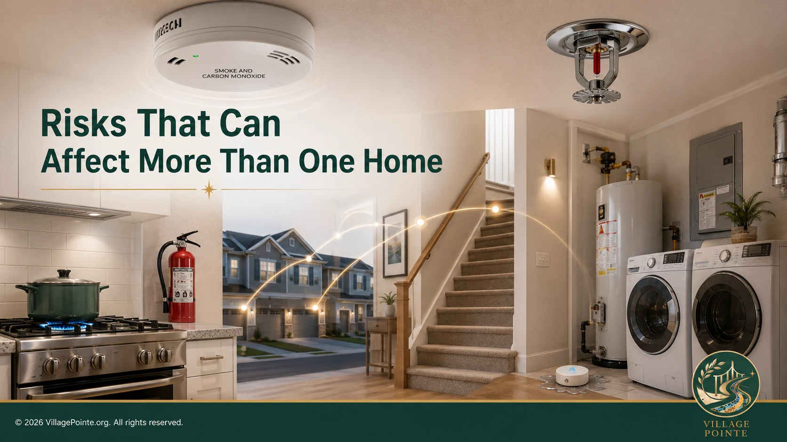
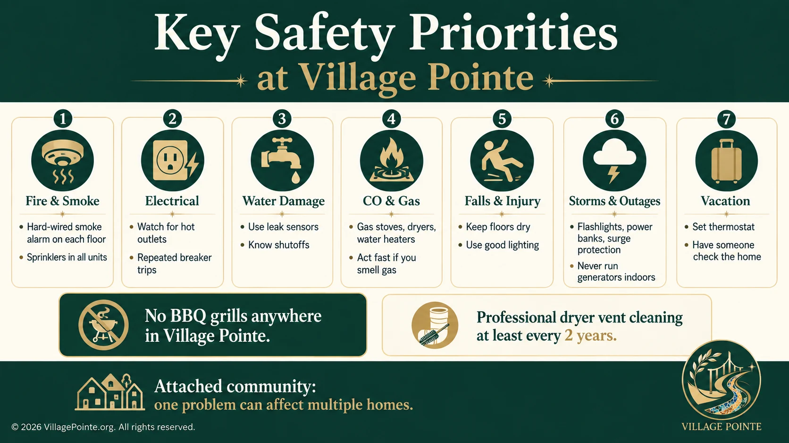
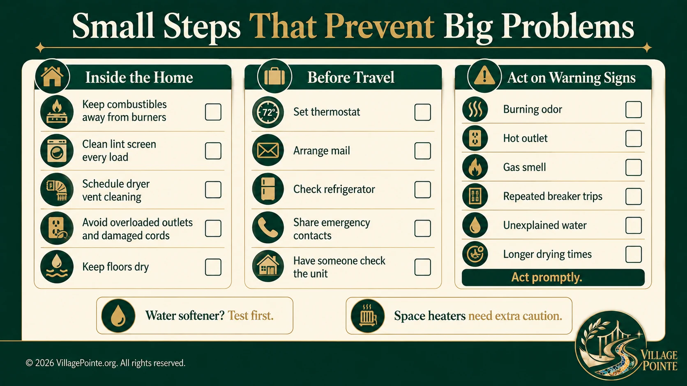

1. Start with the Village Pointe safety profile
Village Pointe is not a detached-home neighborhood. Homes share building structures and sit close to neighboring units, so a resident's prevention habits can affect people beyond the household. The community also has several characteristics that shape sensible safety planning:
- Every Village Pointe unit has a fire sprinkler system. Sprinklers are an important layer of protection, but they do not replace working smoke alarms, escape planning or prevention. NFPA research finds the lowest home-fire death rates when both sprinklers and hardwired smoke alarms are present.
- Village Pointe homes do not have basements. Storm and outage planning should therefore focus on the occupied floors, garages where applicable, utility spaces and exterior conditions rather than basement flooding or sump-pump dependence.
- Natural gas is used in the community. Gas cooking ranges, gas clothes dryers and gas water heaters are common, and some units have gas fireplaces. There are no wood-burning fireplaces in the community.
- The electrical breaker panel is located in the utility area. Resident information also identifies an emergency gas shutoff control/switch in the utility area. Residents should know where these controls are, keep access unobstructed, and never remain in a suspected gas-leak environment to experiment with controls.
- BBQ grills are not permitted anywhere in Village Pointe. That means no grills on balconies, driveways, wooded/common areas or elsewhere in the community. Do not assume that moving a grill a few feet away from the building makes it acceptable.
The strongest safety system is layered: prevention reduces the chance of an incident; alarms detect trouble; sprinklers may control a developing fire; shutoffs can limit damage when safely used; and an escape plan gets people out when conditions are no longer safe.

2. Fire and smoke: the hazard that moves fastest
Keep the hardwired smoke-alarm system current
Village Pointe units were built with hardwired smoke detection on each floor. A required main alarm that fails or reaches end of life should remain hardwired rather than be downgraded to battery-only. USFA recommends alarms on every level, inside bedrooms and outside sleeping areas, with interconnection where possible. Additional wireless devices can supplement, not replace, the required hardwired system. Test alarms monthly and follow the manufacturer's replacement interval; conventional alarms generally require replacement after 10 years.
Smart combined smoke and CO alarms
The second-generation Google Nest Protect combines smoke and CO sensing, Wi-Fi/app alerts and Pathlight, a soft motion-activated night light. Google requires replacement 10 years after manufacture and now directs expiring users to the First Alert Smart Smoke & Carbon Monoxide Alarm as a compatible replacement, including a hardwired model. For Village Pointe, the priority is preserving the required hardwired life-safety function with listed equipment appropriate for the home's wiring.
Carbon monoxide alarms are different from smoke alarms
Smoke alarms detect fire-related smoke; CO alarms detect an odorless, colorless poisonous gas that fuel-burning appliances can produce without visible fire. Because Village Pointe uses gas ranges, dryers and water heaters, with gas fireplaces in some homes, CO detection matters. Plug-in CO alarms with battery backup can supplement the system, but placement is important: CPSC recommends alarms on every level and outside sleeping areas, not in kitchens or directly above fuel-burning appliances. Follow the manufacturer's placement instructions to reduce nuisance alarms.
Have an escape plan before you need one
USFA warns that residents may have less than two minutes to escape after an alarm sounds. Know two ways out where practical, keep stairs and doors clear, choose an outside meeting point and practice the plan with everyone in the household. In real fire or heavy smoke, get out, close doors behind you if possible, call 911 from outside and do not reenter for property.
Fire extinguishers: useful only when conditions are right
A listed multipurpose extinguisher can be valuable, but only for a small, contained fire when someone has called the fire department, smoke is not blocking you and a clear escape route remains. Otherwise, get out. Keep the extinguisher accessible, learn the PASS method, and maintain it according to the manufacturer.
Cooking, grease fires and open flame
Cooking is the leading cause of home fires and injuries. Stay with active stovetop cooking, keep combustibles away from the flame, and turn pot handles inward. For a small pan fire, USFA recommends covering the pan and turning off the burner; never carry a burning pan. Detailed kitchen guidance appears later in this article.
Candles, deep and diyas deserve serious respect
Religious and cultural traditions can involve open flame, including candles, deep or diyas. Their cultural importance does not change the physics of fire. A small flame can ignite curtains, paper decorations, clothing, furniture or nearby household items, especially if it is left unattended or placed near an edge.
USFA recommends keeping candles at least 12 inches from anything that can burn, using stable holders, extinguishing them whenever you leave the room or go to sleep, and considering flameless alternatives. The same prevention principles should be applied to oil lamps and diyas: use a stable noncombustible base, keep substantial clearance from anything combustible, keep children and pets away, and never leave a flame burning unattended as part of a ritual.
Candles can also produce soot and fine particles depending on the wax, wick and airflow; visible wall or ceiling darkening is a sign of soot deposition. The dominant safety concern, however, remains the open flame itself.
Gas fireplaces and space heaters
Some Village Pointe homes have gas fireplaces. Keep the area around the fireplace clear, never store combustibles against it, do not block vents, and have unusual flame behavior, odors, soot or repeated shutdowns evaluated by a qualified technician. Do not use a gas fireplace or gas cooking appliance as an improvised whole-home heating system.
Portable electric space heaters require even more discipline. CPSC recommends at least three feet of clearance from drapes, bedding, furniture and other combustible materials. Plug an electric space heater directly into a wall outlet, never an extension cord or power strip, and turn it off when sleeping or leaving the room.
Dryer vents: an Association requirement with a real fire-safety reason
Village Pointe requires professional commercial dryer-vent cleaning at least once every two years, with the receipt submitted to Property Management under the current process. That requirement should be treated as a minimum documentation cycle, not as permission to ignore poor airflow for two years. Clean the lint screen with every load and arrange service sooner if drying times increase, clothes become unusually hot or airflow weakens.
In an attached community, dryer lint is not merely a maintenance nuisance. A fire that begins in one exhaust path can threaten neighboring homes and an entire building. See the fuller Village Pointe dryer-vent safety guidance.
3. Electrical hazards: heat is often the warning
Electrical problems often announce themselves: a warm or discolored outlet, buzzing, a burning or hot-plastic odor, flickering associated with a device, damaged insulation, or repeated breaker trips. Do not normalize these signs; repeated tripping needs diagnosis.
- Do not overload outlets or power strips. A power strip creates more receptacles; it does not create more circuit capacity.
- Do not use worn, cracked, loose or heat-damaged cords. Replace the appliance or cord as appropriate.
- Do not run extension cords beneath rugs or through locations where they are pinched. Extension cords are temporary wiring, not a substitute for permanent receptacles.
- High-load appliances need appropriate circuits. Refrigerators, cooking appliances, portable heaters and similar loads should follow the manufacturer's wiring instructions. USFA specifically advises against using extension cords for refrigerators, and CPSC says space heaters should go directly into a wall outlet.
- Keep access to the breaker panel clear. Residents should know which panel serves the unit and how circuits are labeled, but electrical repairs belong to qualified professionals.
Charging phones, laptops and lithium-ion devices
Lithium-ion batteries power phones, laptops, tools, power banks and many other devices. Use the intended or properly certified compatible charger and charge on a hard, ventilated surface rather than under bedding or cushions. Stop using a battery that swells, leaks, becomes abnormally hot, gives off an odor, changes shape or makes unusual noises. Store spares away from combustibles and recycle them properly.
This article intentionally does not address e-bike or e-scooter storage and charging. Those mobility-device issues deserve separate treatment rather than being buried in a general home-safety page.

4. Water damage: a small leak can become several homes' problem
Water rarely respects unit boundaries. A failed hose or appliance line can travel through floors, walls and ceilings before the source is obvious, so early detection matters.
Watch the common failure points
- Washing-machine hoses: inspect connections, bulges, corrosion and seepage. Replace aging or damaged hoses rather than waiting for failure.
- Dishwashers: investigate moisture at the toe-kick, recurring dampness, unexplained flooring changes or water after a cycle.
- Refrigerator and icemaker lines: inspect the supply connection and line, especially after moving the refrigerator.
- Toilets: watch the supply line, shutoff valve, tank hardware and base. A quietly running toilet is also wasting water even when it is not leaking onto the floor.
- Under-sink plumbing: look and feel for dampness around traps, supply valves and cabinet floors rather than relying on odor alone.
- Water heaters: inspect for corrosion, seepage, rust trails, unusual sounds or water around the base. Because Village Pointe water heaters are gas-fired, leakage and combustion safety both matter.
Know the shutoffs before water is spreading
Every household should know the practical location of the unit's water shutoff and appliance-level shutoffs where accessible. Do not wait until water is running through a ceiling to begin searching. Separately, Village Pointe utility areas contain the electrical breaker panel and resident information identifies an emergency gas shutoff control. These are different systems with different purposes.
If water is near energized electrical equipment, do not step into standing water or reach for a wet panel. Call appropriate emergency or professional help. If a gas odor is present, do not remain inside attempting to shut equipment down; evacuate and follow gas-emergency procedures.
Leak sensors are inexpensive early warning
Battery or Wi-Fi leak sensors can be placed near laundry appliances, dishwashers, refrigerator lines, water heaters, toilets and sinks. Connected models can alert a phone while the unit is vacant. In an attached community, even a few minutes of earlier detection can matter.
5. Carbon monoxide and natural gas: know the difference
Natural gas and carbon monoxide are not the same hazard. Utility natural gas is odorized so a leak may produce the familiar sulfur or rotten-egg smell. Carbon monoxide has no smell, no color and no taste. A CO alarm is designed to warn of dangerous CO accumulation; it is not a natural-gas leak detector unless the specific product is separately designed and listed for that function.
Fuel-burning appliances can produce CO if combustion or venting is wrong. In Village Pointe that includes gas ranges, dryers, water heaters and gas fireplaces. CPSC recommends professional inspection of fuel-burning heating systems and vents, and warns never to use gas ranges, ovens or clothes dryers to heat a home.
If you smell gas, leave first
PSE&G's current New Jersey instruction is clear: exit the building, move a safe distance away, and then call PSE&G's gas-leak emergency number at 1-800-880-7734 or call 911. Do not stay inside investigating the odor, operating switches or attempting repairs. A suspected gas leak is an evacuation problem first and a troubleshooting problem for trained responders second.
Blocked vents matter
Keep appliance vents, flues and combustion-air openings unobstructed. After renovation, storage changes or maintenance work, make sure nothing has been placed over or against a vent. Soot, unusual condensation, persistent appliance shutdowns or CO alarms require qualified investigation.
Portable fuel-burning generators are not a Village Pointe solution
Portable generators create a severe CO hazard. CPSC says generators must never be operated inside homes or garages and should be used outside at least 20 feet from the home with exhaust directed away. That guidance alone makes conventional generator use especially difficult around closely attached homes.
For Village Pointe, this guide's recommendation is stronger: do not plan to use a portable fuel-burning generator at a unit or in common areas. Current Association rule status should be verified separately, but the combination of attached construction, shared surroundings, exhaust, fuel storage, noise and CO risk makes it a poor fit for the community.
For limited outage resilience, a properly listed indoor battery power station, UPS or larger battery-backup system may be a more practical option for selected electronics or equipment, provided it is used within its manufacturer-rated load and charging requirements. Do not improvise a connection to household wiring or "backfeed" a circuit. Whole-home battery systems are a different category and can involve electrical permits, qualified installation and Association approval.
6. Falls and household injury: ordinary surfaces become hazards quickly
Falls often begin with ordinary conditions residents stop noticing: wet floors, loose rugs, dim stairs, clutter or winter ice.
- Dry bathroom and kitchen floors promptly. Use secure, slip-resistant bath mats rather than loose rugs that slide.
- Keep stairways and landings clear. Do not use steps as temporary storage.
- Repair or remove rugs and mats that curl, slide or create a trip edge.
- Use adequate lighting at stairs, hallways, entries and nighttime routes to bathrooms.
- In winter, treat ice near entrances as an immediate hazard and follow the current Village Pointe snow/ice procedures for areas managed by the Association.
- If water feels excessively slick after installing treatment equipment, reduce soap use and reassess whether the treatment is necessary. See the Water Softener Guide for the distinction between hard-water lather problems and the slippery feel associated with softened water.
Smart smoke/CO products such as Nest Protect historically offered a motion-activated Pathlight, and other night-light products can serve a similar purpose. Soft pathway lighting can be useful, but it should supplement rather than replace proper stair and hallway lighting.
7. Kitchen safety deserves its own routine
The kitchen combines open gas flame, high heat, electricity, grease, paper, fabric and human distraction. Prevention is mostly behavioral:
- Stay near active stovetop cooking. Unattended cooking is a leading ignition factor in home cooking fires.
- Keep towels, paper towels, wooden utensils, packaging and other combustibles away from burners.
- Turn pot handles away from the edge and keep a lid nearby when frying.
- Clean grease from the stovetop, backsplash and range hood/filter according to the appliance instructions. Built-up grease can burn.
- Do not line a gas oven in a way that blocks combustion airflow. CPSC specifically warns against covering the bottom of natural-gas or propane ovens with foil if it obstructs airflow.
- Plug countertop cooking appliances and microwave ovens as the manufacturer requires; do not rely on undersized extension cords.
- If a microwave fire starts, turn it off and keep the door closed until the fire is out. If an oven fire is contained, turn off the heat and keep the door closed. If the fire escapes the appliance or continues to spread, evacuate and call 911.
Cooking smoke is never a reason to disable the hardwired smoke alarm. Use the alarm's hush function and ventilation if appropriate, then correct the source of the nuisance alarm or consult a qualified professional about placement. A disconnected alarm solves the nuisance by creating a much larger safety problem.
8. Storms and power outages: prepare for the likely problems
Village Pointe has no basements, so residents do not need to build an outage plan around basement sump pumps. The more common concerns are lighting, communications, refrigeration, heating/cooling, electronics, frozen plumbing during prolonged winter outages, and safe movement through dark interior spaces.
- Keep flashlights available in predictable locations and check batteries periodically. USFA recommends flashlights rather than candles during outages.
- Maintain charged power banks for phones and small devices. Use listed products and inspect battery packs for swelling or heat damage.
- Use surge protection appropriately for sensitive electronics. A surge protector is not an excuse to overload a circuit.
- Keep refrigerator and freezer doors closed. FDA says an unopened refrigerator generally keeps food cold for about four hours; a full unopened freezer can hold temperature for about 48 hours, or about 24 hours if half full.
- Know winter freeze risks. During prolonged cold outages, monitor indoor temperature, keep plumbing areas reasonably warm where possible, and obtain qualified guidance before shutting or draining systems.
- Do not use the gas range or oven to heat the home. Do not use charcoal, grills or fuel-burning generators indoors or in garages.
If a resident wants backup power for phones, internet equipment, selected lights or medical/essential electronics, a battery system may be appropriate when properly sized and safely charged. Match the equipment to the load rather than assuming a portable battery can operate high-draw appliances indefinitely.
9. Before an extended absence: make the home boring
A well-prepared vacant home should have as little opportunity as possible for an unnoticed leak, temperature problem or appliance failure. Before travel:
- Consider the water supply. Know the correct unit shutoff and decide, with appropriate professional or management guidance, whether shutting water is sensible for the length and season of the absence. Do not shut systems blindly when appliances, heating or other equipment may depend on water.
- Use a remotely accessible thermostat. For Village Pointe, this guide has a practical editorial preference for a Honeywell Home/Resideo Wi-Fi thermostat over a Google Nest thermostat when compatibility allows. The reason is straightforward conventional thermostat operation combined with reliable app-based remote temperature control and alerts. This is a site preference, not a safety rule; correct HVAC compatibility and professional installation matter more than brand. The former Honeywell Home app is now the Resideo app for supported products.
- Check the refrigerator. Remove highly perishable food if the home will be vacant for a long period and make sure doors close fully.
- Arrange mail and deliveries. Avoid an obvious buildup that advertises an empty unit.
- Share emergency contacts. A trusted local person should know how to reach you and, where appropriate, Property Management.
- Have someone periodically check the unit. A short physical walkthrough can identify water, odor, HVAC or electrical problems that no app catches.
- Use leak and temperature alerts. Connected leak sensors and thermostat alerts can provide useful early warning while away.
Remote access is useful, but it does not replace working local alarms or a trusted person who can check the home.

10. A 15-minute Village Pointe safety walkthrough
Once or twice a year, walk through the home deliberately rather than waiting for something to fail. A simple sequence can uncover a surprising number of problems:
Test hardwired smoke alarms and CO alarms. Check manufacture/end-of-life dates and confirm required hardwired units have not been replaced with battery-only devices.
Clear stairs, doors and primary exits. Confirm everyone knows the outside meeting point and who assists children, older adults or pets.
Clear combustibles from burners, clean grease, check extinguisher condition and inspect appliance cords.
Keep the breaker panel and utility area accessible. Look around the water heater and laundry connections for seepage, corrosion or heat damage.
Look for overloaded strips, worn cords, loose plugs, hot outlets, scorched plates or recurring breaker trips.
Inspect washing-machine hoses, refrigerator line, dishwasher area, toilets and under-sink plumbing. Test leak sensors.
Make sure vents are unobstructed and CO alarms are placed according to manufacturer guidance. Know the PSE&G gas-emergency procedure.
Correct loose rugs, poor lighting, cluttered stairs, wet floors and other trip/slip hazards.
Verify thermostat remote access, emergency contacts, mail arrangements and who will check the home during a long absence.
11. The bottom line: safety is shared in an attached community
Village Pointe already has an important advantage: every unit is sprinklered. But sprinklers are only one layer. Working alarms, clean dryer vents, early leak detection, prompt gas-leak response and clear escape routes prevent or limit damage before an incident grows.
The objective is not to fill the home with gadgets. It is to manage the relatively small number of hazards that cause disproportionate damage.
Good prevention
- Working hardwired smoke alarms and CO coverage
- Clear exits and practiced escape plan
- Dryer-vent cleaning and lint-screen care
- Attended cooking and controlled open flame
- Sound electrical cords, outlets and circuits
- Leak detection and known shutoffs
- Maintained gas appliances and clear vents
- Dry floors, clear stairs and good lighting
Warnings that deserve action
- Burning or hot-plastic odor
- Hot, loose or discolored outlet
- Repeated breaker trips
- Gas odor or unexplained CO alarm
- Longer dryer cycles or poor exhaust
- Water where it should not be
- Rust or seepage around water heater
- Damaged, swollen or overheated batteries
Official safety references
Village Pointe-specific facts and community practices are identified in the article. General safety guidance is grounded primarily in government and established fire-safety sources.
Alarm placement, interconnection, testing and 10-year replacement guidance. ↗ U.S. Fire Administration: Home Fire Escape Plans
Two ways out, meeting places and rapid escape planning. ↗ U.S. Fire Administration: Fire Extinguishers
When extinguisher use is appropriate and the PASS method. ↗ U.S. Fire Administration: Cooking Fire Safety
Unattended cooking, pan fires and stovetop prevention. ↗ U.S. Fire Administration: Candle Safety
Open-flame clearance, stable holders and flameless alternatives. ↗ U.S. Fire Administration: Appliance & Electrical Safety
Outlets, cords, power strips and appliance fire prevention. ↗ U.S. Fire Administration: Battery Fire Safety
Lithium-ion warning signs, charging and storage. ↗ U.S. CPSC: Carbon Monoxide Fact Sheet
CO alarms, appliance/vent safety and generator hazards. ↗ PSE&G: I Smell Gas
New Jersey gas-leak emergency instructions. ↗ U.S. FDA: Food Safety During Power Outages
Refrigerator/freezer guidance during outages. ↗ Google: Replacing Expired Nest Protect
10-year second-generation replacement and compatible First Alert option. ↗ First Alert: Nest Protect Replacement
Hardwired/battery smart smoke and CO replacement information. ↗ Resideo: Smart Home App
Remote management for compatible Honeywell Home/Resideo thermostats and devices. ↗